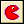
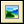
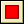
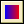
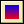
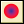
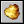

 Draw Sprite
You specify the sprite, the position (either absolute or relative
to the current instance position) and the subimage of the sprite.
(The subimages are numbered from 0 upwards.) If you want to draw
the current subimage, use number -1.
 Draw
Background
You indicate the background image, the position (absolute or
relative) and whether the image should be tiled all over the room
or not.
Draw Text
You specify the text and the position. A # symbol in the text is
interpreted as going to a new line. (Use \# to get the # symbol
itself.) So you can create multi-line texts. If the text starts
with a quote or a double quote, it is interpreted as an expression.
For example, you can use
'X: ' + string(x)
to display the value of the x-coordinate of the instance. (The variable x stores the current x-coordinate. The function string() turns this number into a string. + concatenates the two strings.)
Draw Scaled
Text
This action is similar to the previous action but this time you can
also specify a horizontal and vertical scaling factor to change the
size of the text and you can specify an angle to rotate it.
This action is only available in the Standard
Edition.
 Draw
Rectangle
You specify the coordinates of the two opposite corners of the
rectangle; either absolute or relative to the current instance
position.
 Horizontal
Gradient
This action also draws a rectangle but this time using a gradient
color that changes from left to right. You specify the rectangle
and the two colors to use. This action is only available in
the Standard Edition.
 Vertical
Gradient
This action also draws a rectangle but this time using a gradient
color that changes from top to bottom. You specify the rectangle
and the two colors to use. This action is only available in
the Standard Edition.
Draw
Ellipse
This action draws an ellipse. You specify the coordinates of the
two opposite corners of the surrounding rectangle; either absolute
or relative to the current instance position.
 Gradient
Ellipse
Again an ellipse is drawn but this time you specify a color for the
center and the boundary. This action is only available in the
Standard Edition.
Draw Line
You specify the coordinates of the two endpoints of the line;
either absolute or relative to the current instance position.
Draw Arrow
Draws an arrow. You specify the coordinates of the two endpoints of
the line and the size of the arrow tip.
Set Color
Lets you set the color used for drawing shapes, lines, and text.
(It does not influence the way sprites and backgrounds are
drawn.)
Set Full
Screen
With this action you can change the screen mode from windowed to
fullscreen and back. You can indicate whether to toggle the mode or
whether to go to windowed or fullscreen mode.
Take Snapshot
With this action you can take a snapshot image of the game and
store it in a .png file. You specify the filename to store the
image in. This action is only available in the Standard
Edition.
 Create Effect
With this action you can create all sorts of effects in a very
simple way. You specify the type of effect, e.g. an explosion or
smoke, its position, its size and its color and whether it should
be shown below the objects or on top of them. For the rest it works
automatic. (For rain and snow the position is irrelevant as it
always falls down from the top of the screen. To get continuous
rain you should create it in each step.) Please note that below
actually means at a depth of 100000 and above means at a depth of
-100000. This action is only available in the Standard
Edition.
| Converted from CHM to HTML with chm2web Pro 2.85 (unicode) |